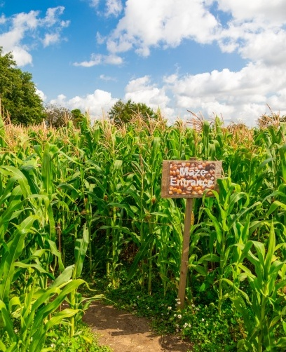
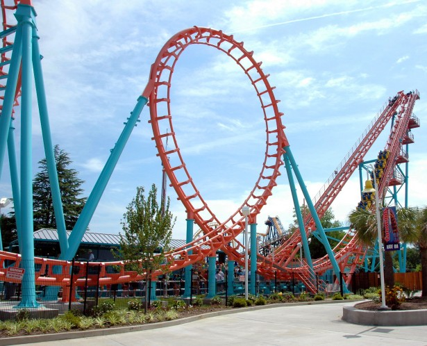
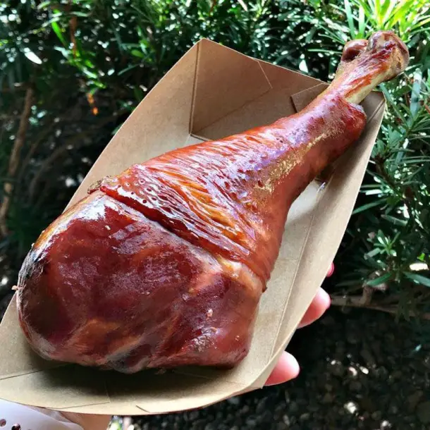
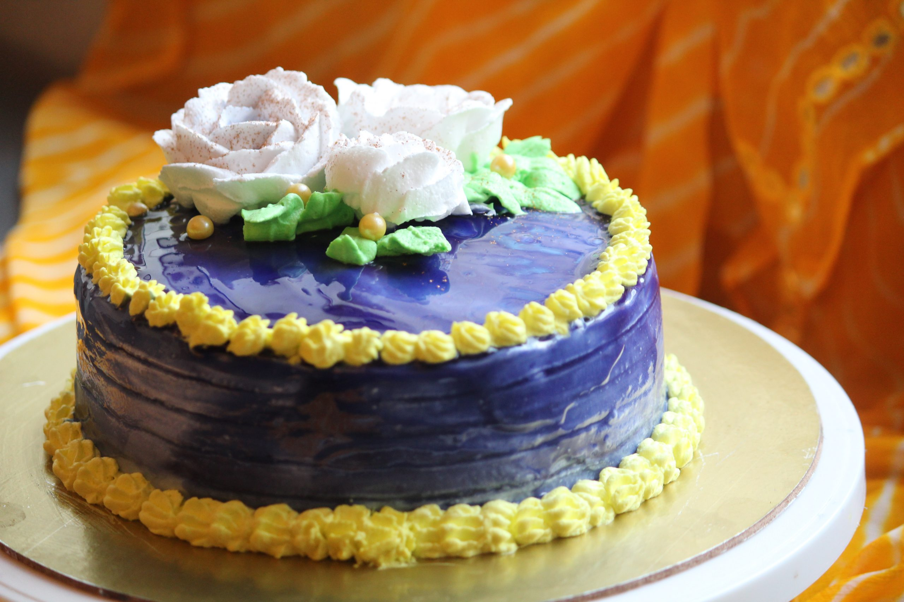

Exciting Events
There is always something to do at Brookstone's
Fall Festival! Some of our most popular activities
include apple picking, pumpking carving, a corn maze
and the annual blueberry pie eating contest, ages 10-16!
There will also be face painting, multiple scavengar hunts
and a haunted trail after dark! Any age is guarenteed
to have fun, so bring your whole family!

Some of the most exciting things about Brookstone Fall
Festival are the rides! Brookstone has over 20 exhilarating
rollercoasters to ride! Each coaster has different height
requirements, which the attendant will check before you
are allowed to ride. All rollercoasters are AIMS certified!

Fantastic Food

The delicious smells of Brookstone Festival food
are one of the many reasons family flock here every year!
Vendors from around the county set up their booths
in Brookstone to satisfy customer's demands for these
tasty treats. Some of the most popular foods include
fried turkey legs, fudge, sweet lemonade, and cinnamon
buns. All food vendors open with the festival but close
an hour early, so be sure to satisfy your hunger before it's too late!
Every Saturday the Brookstone Fall Festival is open,
there is a cake decorating contest!
All participants begin with a cake decorated in white
icing. From here, particpants have access to all colors
of icing and various decorating tools to make a pretty cake.
Cakes are voted on by Brookstone guests and the winner is
announced at 6:00 that evening. Winners get a basket of
Brookstone sweets!
